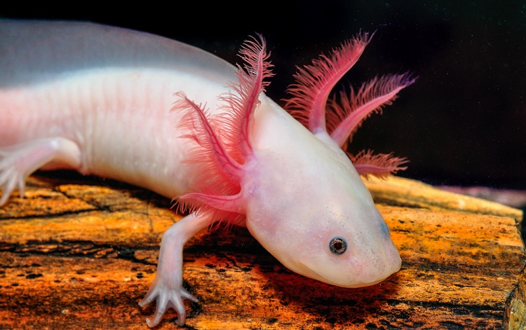
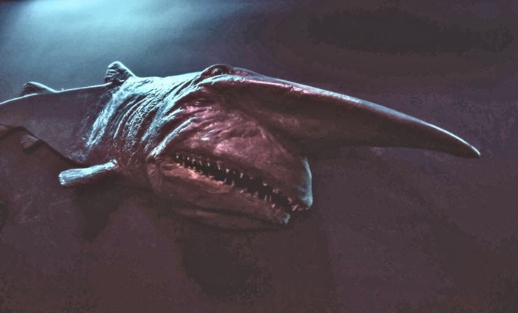
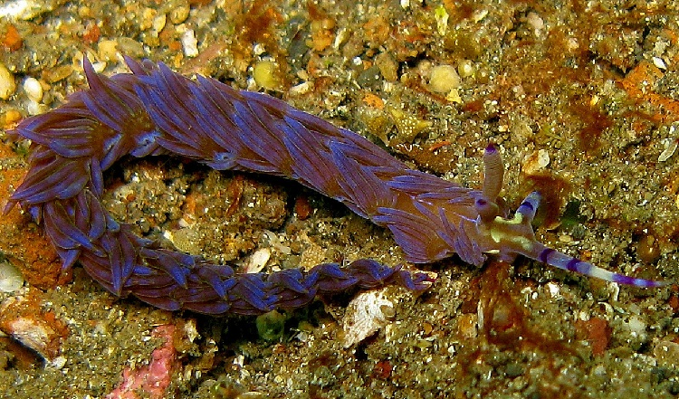

The Mexican walking fish or Axolotl is a definitely weird addition to the animal world. This is not a fish but an amphibian, and I simply love the bright-colored red crown around its head, which are its gills, allowing it to breathe underwater.
The axolotl, scientifically known as Ambystoma mexicanum, is a captivating aquatic salamander native to the lakes of Mexico. What sets the axolotl apart is its unique ability to reach adulthood without undergoing metamorphosis, retaining its aquatic larval features throughout its life. Characterized by external feathery gills, axolotls breathe underwater and display remarkable regenerative capabilities, capable of regrowing limbs and even parts of their heart and brain. The term "neoteny" aptly describes their developmental phenomenon, as they maintain juvenile characteristics into sexual maturity. With a variety of colors ranging from brown and gray to albino and gold, these creatures have become popular exotic pets. However, in their natural habitat, axolotls face threats such as habitat loss and pollution, leading to their critical endangerment. Beyond their charm as pets, axolotls contribute significantly to scientific research, particularly in the fields of regenerative medicine and developmental biology.
Click on the image for more details
Staying with deep sea fish, the goblin shark is a true mystery of the deep. This shark lives at depths of over a thousand feet, and they are found all across the world’s oceans. Goblin sharks are prehistoric in nature, making them living fossils. Due to their translucent skin, goblin sharks appear pink in color, which just looks so out of place with their flattened lower jaw and projectile-shaped nose.
Click on the image for more details
Nudibranch animals are sea slugs that have shed their shells as a stage of development, producing brightly colored bodies and unique patterns. Nudibranch, any of the marine gastropods that constitute the order Nudibranchia (subclass Opisthobranchia of the class Gastropoda). Nudibranchs possess a radular feeding organ, but they characteristically lack a shell, gills, and mantle cavity typical of other mollusks. The delicately coloured body has bizarre outgrowths, called cerata, which serve a defensive function, discharging nematocysts that the nudibranch has ingested from cnidarian prey. Cerata also function in gas exchange. Antenna-like organs (rhinophores) arise from the animal’s head. Nudibranchs reach lengths of 43 cm (16 inches). About 40–50 percent of all opisthobranch species belong to this order.
Click on the image for more details
 This web page is created by shaik-nayeem.
All Rights Reserved.